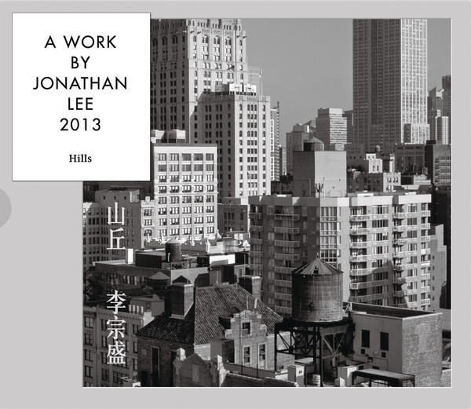

最喜欢的歌 - 山丘
《山丘》这首歌是李宗盛亲自创作的一首歌，其实这首歌的旋律李宗盛早在2003年就写好了 ，但词是到2013年才真正完成的。 李宗盛表示，2003年他初抵上海，当时是个悲伤的夏天，一个旋律进入脑海，他花了10年不停想，他想用音乐沟通一下自己的人生经历，所以就创作了《山丘》这首歌。
一个朋友说，所有的歌曲都在歌颂两个主题：爱与希望。 李宗盛先生亦是如此，它很轻描淡写生活中的种种不幸，让我们直面生活的不幸，而不是简单地采用安慰与治愈。 生活就像一条坑坑洼洼的长路，李宗盛先生的歌就像雨后的月光，在黑夜中照亮我们路上的每一个小水洼。 他不会去帮你填平那些坑坑洼洼，他只会用雨水和月光告诉你，生活的种种艰辛与不幸，其实也是生活中的有光彩的部分。 人生就是一个不断经历的过程，欢愉总是片刻的。 更多地是，平淡与不幸所带来的长久痛苦，在不幸面前，如若能早一些淡然，早一些重怀希望，那该有多好。 人生有限，经历一次少一次，每一次都值得我们倍加珍惜。
这首歌它让我学会在面对各种烦恼的事情时候，能够静下心来，对未来的人生充满最初的期望，对自己的意念保有心底坚持，对生活常怀真诚感恩之心。 特别喜欢山丘里面的一句：也许我这一生涓滴意念，侥幸汇成河。请对生活多一点耐心和守候，祝愿大家的涓滴意念都可以汇成自己的生命长河。